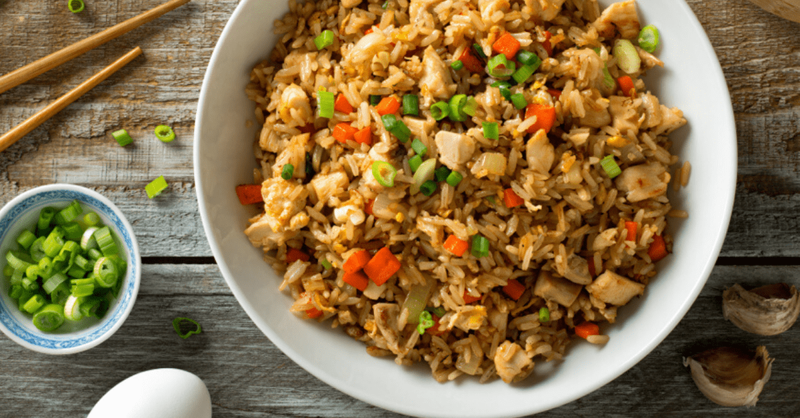

Fried Rice

Description
This is how you make Benihana style fried rice.
This version has been perfected by Madison Phung.
Ingredients
- 2-3 cups of fried rice (preferably a day old at least)
- Half a cup of chopped yellow onions
- 1 tbs of garlic
- 1 cup of chopped green onions
- 3-4 eggs
- 2 tbs of soy sauce
- 2 tbs of sesame oil
- 2 tbs of butter
- 1 tbs of olive oil
- Salt and pepper
Steps
- Chop the yellow onions, garlic, and green onions if you haven't
already done so.
- Crack the eggs in a bowel and beat. Add a touch of salt and
pepper.
- Heat up a pan on medium heat and pour in olive oil. Let the oil
heat up, then add 1 tbs of butter, the yellow onions, and the
garlic. Heat until golden brown.
- Set the onions and garlic to one side of the pan. Next, add
the beat eggs on the other side. Scramble the eggs
- Add in the rice and mix everything together. Once everything
is thoroughly mixed, add in the green onions, 1 tbs of butter,
2 tbs of soy sauce, 2 tbs of sesame oil, and salt and pepper.
Mix.
- Mix in the cup of green onions. Add more soy sauce, sesame oil,
and salt and pepper to your taste.
- Enjoy!